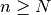
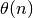
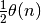
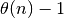
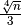
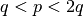

Questa è la classe astratta della categoria di generatori di primi. Un generatore viene inizializzato con l’istanza di test di primalità che si intende usare.
E’ il metodo principale della classe, consente di generare un numero primo di dimensione superiore all’argomento fornito in kwargs[‘min’].
A partire da un numero iniziale num si considerano tutti i numeri  e tramite il test scelto se ne verifica la primalità. Quando viene trovato un numero primo, viene restituito n.
This class is safe from p-1 and small factors attacks
A partire da un numero iniziale num si determina un primo p come in models.NumberGenerator.PrimeGenerator affinchè sia maggiore del minimo richiesto. Dunque si generano interi k*p + 1 e se ne verifica la primalità. Quando si trova un numero primo viene restituito. Un primo generato in questo modo risulta sufficientemente robusto agli attacchi p-1 e dell’esponente universale, poichè p-1 avrà fattori primi sufficentemente grandi da non essere fattorizzabili.
- class models.KeyAlgorithm.SimpleKeySelectionAlgorithm¶
- set_private_key(client)¶
Il metodo a partire da un client recupera il modulo e determina un numero coprimo con  (affinchè sia invertibile), compreso tra  e .
- class models.KeyAlgorithm.WeakKeySelectionAlgorithm¶
La classe eredita da models.KeyAlgorithm.SimpleKeySelectionAlgorithm ma genera un numero coprimo con inferiore di . Se i primi p e q sono tali che  o viceversa; l’esponente così generato consente la fattorizzazione del modulo tramite un attacco ad esponenti bassi.